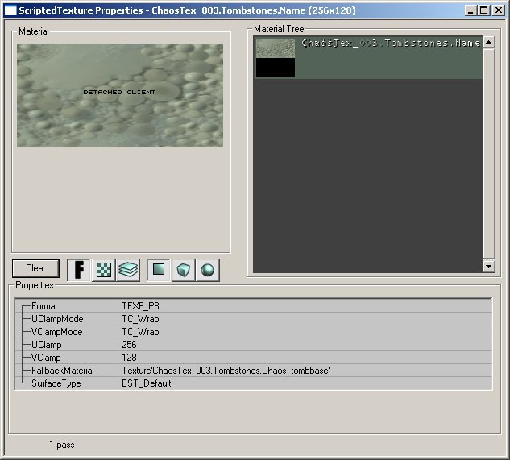

Writing On ScriptedTextures
Please note for what ever reason Epic did not support this feature on the OpenGL render. So any one that runs with the OpenGL render (Mac/Linux) will not see them. Since the lion share of UT2003 players use the D3D render I felt it was ok to use this just this one time in our mod, ChaosUT2.
This tutorial will show you how to use use ScriptedTextures to draw the names of players on objects. You can then use this method to expand on it to add in other features. Note this is the same method that UnrealSpeed used to draw the player's name on the license plate of the cars. With the Tombstones in Chaos we has certain rules for when we would spawn them, had animations on them so they "rise up" from the ground/floor, had 5/6 custom "rise" sounds, different skins and have 5/6 different meshes of each Tombstone. Since this is a tutorial, we will simplify it to drawing the name of the dead player on the Tombstone with a "R.I.P" text as a header.
See ScriptedTexture for technical documentation of the class and its functions.
There are two parts are required for scripted textures to work:
- Custom scripted texture
- Code that draws on the scripted texture
Custom Scripted Texture
What you will want to do is make a new texture. Give your texture a name and select ScriptedTexture as its Material Class:
![[scriptedTex1]](images/scriptedtex1.jpeg) |
Next make sure you give your images a size by setting up the Uclamp and Vclamp.

|
Finally you want to ensure that you place the Scripted Texture on the object in the proper place:
![[scriptedTex3]](images/scriptedtex3.jpeg) |
Again your object will need to support this by having a section ready for this texture.
Make sure to save your texture file. That is it for your Custom Scripted Texture.
Code
What the code will do is spawn the object you want to draw the text on then draw the text. Simple you say? Well yes but there is one gotcha. Normally textures are global. So if you spawn three of your objects, then all of them would have the SAME text written on them! Why? The engine sees its as only one texture and not one for each object. What you can do is use the object pool. This way you can spawn a separate texture for each object. Let me again show the key parts and then the complete code. First lets look at the PostNetBeginPlay:
simulated function PostNetBeginPlay() { Super.PostNetBeginPlay(); TombStoneName = ScriptedTexture(Level.ObjectPool.AllocateObject(class'ScriptedTexture')); // this spawns a unquie Scripted texture for us to use TombStoneName.SetSize(256,128); // Size will default it to 0,0....so...better give it some size or eles you wont see it :) TombStoneName.FallBackMaterial = TombStoneNameBack; // Set the background material TombStoneName.Client = Self; // This is the ref we need to draw on skins[1] = TombStoneName; // Set the "name area }
The key for us is to ensure we use the objectpool to get a unique scripted texture to use. Next we need to modify the RenderTexture function (that all actors have) to setup then drawn the players name:
simulated event RenderTexture(ScriptedTexture Tex) { local int SizeX, SizeY; // Err for now go with a name in black letters NameColor.R=0; NameColor.G=0; NameColor.B=0; NameColor.A=255; // Set this to whitew/ no alpha for now... BackColor.R=255; BackColor.G=255; BackColor.B=255; BackColor.A=0; Tex.TextSize(DeadPlayersName,NameFont,SizeX,SizeY); //Returns the Size needed for this string to ensure it will fit on the space provided Tex.DrawTile(0,0,Tex.USize,Tex.VSize,0,0,Tex.USize,Tex.VSize,TombStoneNameBack,BackColor); // Draws the tile background Tex.TextSize("R.I.P.",NameFont,SizeX,SizeY); // Drews the header "R.I.P." Tex.DrawText( (Tex.USize - SizeX) * 0.5, 32, "R.I.P", NameFont, NameColor); Tex.TextSize(DeadPlayersName,NameFont,SizeX,SizeY); // get the size of the players name Tex.DrawText( (Tex.USize - SizeX) * 0.5, 74, DeadPlayersName, NameFont, NameColor); // draws the name of the player that died }
Most of the above is cut and dry. We set up the colors, check to make sure the text will fit in the area we want to draw it, then draw the text. The last item that we need to do is free up our scripted texture when this object is destroyed:
simulated event Destroyed() { Level.ObjectPool.FreeObject(TombStoneName); }
Finally here is the whole code:
//============================================================================= // TombStone // $Id: Tombstone.uc,v 1.19 2003/06/29 23:11:17 jb Exp $ // Special Thanks to Kaoh Scarabea for his help and post about this //============================================================================= class Tombstone extends Decoration; // texture stuff var Material TombStoneNameBack; // background on the tombstone var ScriptedTexture TombStoneName; // Texture that we write the name on, this is the key elemet //Font/Color/stuff var Font NameFont; var font SmallNameFont; // Used when the name is to big too fit var color NameColor; // Colors var Color BackColor; var string DeadPlayersName; // The players name that just got fragged replication { reliable if(Role == ROLE_Authority) DeadPlayersName; // well other people need to see this :) } simulated function PostNetBeginPlay() { Super.PostNetBeginPlay(); TombStoneName = ScriptedTexture(Level.ObjectPool.AllocateObject(class'ScriptedTexture')); // this spawns a unquie Scripted texture for us to use TombStoneName.SetSize(256,128); // Size will default it to 0,0....so...better give it some size or eles you wont see it :) TombStoneName.FallBackMaterial = TombStoneNameBack; // Set the background material TombStoneName.Client = Self; // This is the ref we need to draw on skins[1] = TombStoneName; // Set the "name" area } simulated event RenderTexture(ScriptedTexture Tex) { local int SizeX, SizeY; // Err for now go with a name in black letters NameColor.R=0; NameColor.G=0; NameColor.B=0; NameColor.A=255; // Set this to whitew/ no alpha for now... BackColor.R=255; BackColor.G=255; BackColor.B=255; BackColor.A=0; Tex.TextSize(DeadPlayersName,NameFont,SizeX,SizeY); //Returns the Size needed for this string to ensure it will fit on the space provided Tex.DrawTile(0,0,Tex.USize,Tex.VSize,0,0,Tex.USize,Tex.VSize,TombStoneNameBack,BackColor); // Draws the tile background Tex.TextSize("R.I.P.",NameFont,SizeX,SizeY); // Drews the header "R.I.P." Tex.DrawText( (Tex.USize - SizeX) * 0.5, 32, "R.I.P", NameFont, NameColor); Tex.TextSize(DeadPlayersName,NameFont,SizeX,SizeY); // get the size of the players name Tex.DrawText( (Tex.USize - SizeX) * 0.5, 74, DeadPlayersName, NameFont, NameColor); // draws the name of the player that died } simulated event Destroyed() { Level.ObjectPool.FreeObject(TombStoneName); } defaultproperties { skins[0]=Texture'ChaosTex_003.Tombstones.Chaos_tombbase' TombStoneNameBack=Texture'ChaosTex_003.Tombstones.Chaos_tombsign' TombStoneName=ScriptedTexture'ChaosTex_003.Tombstones.Name' Mesh=SkeletalMesh'Chaos_Extras1.Chaos_tombstone1' NameFont=Font'UT2003Fonts.FontMedium' SmallNameFont=Font'UT2003Fonts.FontSmall' Drawscale=1.0 CollisionHeight=1.2 CollisionRadius=15 bCollideWorld=True bCollideActors=False Physics=PHYS_Falling bUseCylinderCollision=true bStatic=False bNoDelete=False bAcceptsProjectors=True bUseDynamicLights=false AmbientGlow=50 Lifespan=45 // Network stuff bGameRelevant=true bNetTemporary=True RemoteRole=ROLE_SimulatedProxy }
Some other notes I did not mention: We are spawning the Tombstone from someplace else. When we spawn it we set the DeadPlayersName var then make sure that gets replicated. Also you could choose another parent than Decoration but for our use it seemed to fit what the Tombstones are (they are just for decorations). You also can see TombStoneName in the DefaultProperties is where we call out our CustomScriptedTexture that we made in the first steps.
That's the basics behind how to get them in and working. This above example is also network compliant. I am sure I may have skipped something important or made some errors so please let me know. Again this is only going to work for those D3D windows users which is not everyone.
Discussion
UArchitect: hmm, what about if i wanted to draw several textures on my scripted texture, in different positions/sizes? :o i cant seem to find any other really good resources or tutorials on making scriptedtextures, other than making text/messages this helped a bit though 
Mychaeel: Use the DrawTile function declared in ScriptedTexture to draw textures on your scripted texture.
Related Topics
- ScriptedTexture class
Category To Do - Lots of duplication between this and ScriptedTexture